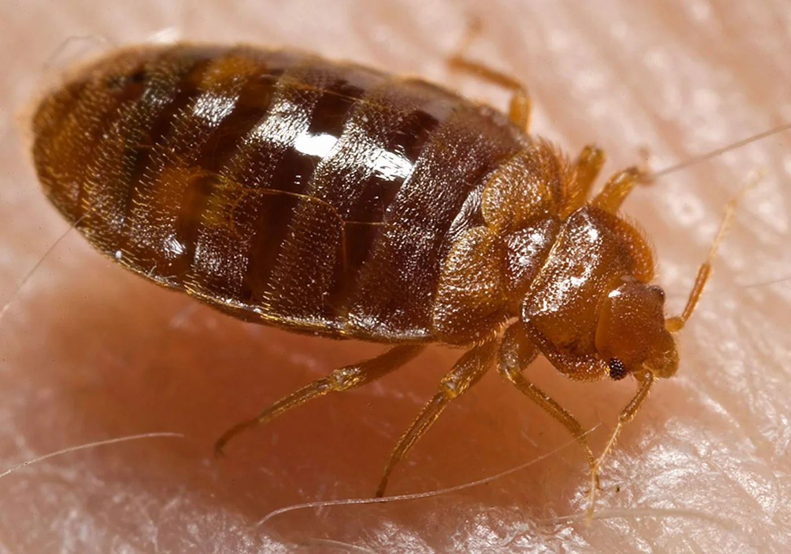

Mest aktivAugust12 % av årets oppdrag
Oppdrag i 20252 650hos skadedyrfirma (FHI)
Endring på fem år+32 %fra 2015 i 2020
Kjennetegn6å se etter
Slik kjenner du den igjen
- 1Rødbrun farge
- 2Oval og sterkt flattrykt kropp
- 3Voksne 5–6 mm lange og 3 mm brede
- 4Nymfer er mindre og lysere
- 5Egg 1 mm og hvite
- 6Svarte ekskrementflekker på seng og madrass
Fakta om veggedyr
Størrelse5–6 mm
- Voksne veggedyr er 5–6 mm lange og 3 mm brede.
- Eggene er 1 mm lange.
- Nymfene er mindre enn de voksne.
Utseende
- Rødbrune i fargen med en oval og sterkt flattrykt kropp.
- Mangler vinger og har en leddelt sugesnabel som ligger bakover under kroppen i hvile.
- Svulmer opp og blir mørkere etter at de har sugd blod.
- Eggene er hvite, mens nymfene er lysere enn de voksne.
Spor og tegn – dette ser du etter
- Små svarte, brune eller lysegrå ekskrementflekker (grå flekker lyser under UV-lys ved 385 nm).
- Blodflekker på sengetøy eller laken etter måltid.
- Funn av tomme huder, hvite egg og levende eller døde insekter på gjemmestedene.
- En karakteristisk lukt fra alarmferomoner i rom med mange individer.
Hvor du finner den
- Innendørs, særlig i og rundt senger, sofaer og lenestoler der folk sover.
- I sprekker, hulrom, bak lister, bilder, skap, gardiner, stikkontakter og løsnet tapet.
- På overnattingssteder som hoteller, campinghytter, studenthjem og i private boliger.
Livssyklus og sesong
- Hunnen legger 5–8 egg per uke (opptil 200 totalt) som klekker etter 4–21 døgn.
- Har fem nymfestadier og må suge blod minst én gang mellom hvert stadium.
- Hele livssyklusen tar omtrent 2 måneder ved 22 °C, opptil ett år ved lav temperatur, og stopper under 10 °C.
- Kan overleve lenge uten mat; voksne i opptil 485 dager og nymfer i opptil ni måneder ved 10 °C.
Skade og helse
- Gir kløende stikk som kan gi sekundære bakterieinfeksjoner dersom man klør på dem.
- Det er ikke dokumentert at de overfører sykdommer til mennesker under naturlige forhold.
Forebygging
- Undersøke sengen og tekstilkanter grundig med lommelykt ved ankomst på overnattingssteder.
- Holde bagasjen lukket i kofferten, oppe på koffertstativ eller plassert på badet borte fra sengen.
- Kulde- eller varmebehandle bagasje ved mistanke om smitte etter reise.
- Undersøke brukte møbler og innbo nøye før de tas inn i boligen.
Slik blir du kvitt den
- Gjennomføre en byggomfattende og integrert bekjempelse (IPM) som også omfatter naboleiligheter.
- Bruke giftfrie metoder, da veggedyr er resistente mot tradisjonelle kjemiske insektmidler.
- Benytte profesjonelle skadedyrbekjempere for en kombinasjon av tilpassede metoder.
- Gjennomføre etterkontroll for å sikre at angrepet er fullstendig utryddet.
Kilde: FHI Skadedyrhåndboka: Veggedyr.
Utstyr mot veggedyr
Valgt for denne siden · kjøp hos Skadedyrbutikken
BeskyttMadrass beskytter veggedyr - 90 x 200 x 30 cmTett madrassbeskytter som hindrer veggedyr i å etablere seg i madrassen.
395 krSe produktet →

ForebyggInsektmiddel InsektNIX - rent naturprodukt - 200 gNaturlig kiselgurpulver uten gift som tørker ut og bekjemper krypende veggedyr.
219 krSe produktet →
Kan forveksles med
Raskeste testSvaletegen er mindre, lysere gulbrun og mer hårete, mens veggedyret er større, rødbrunt og mindre hårete.

| Veggedyr | Svaletege | |
| Størrelse | 5–6 mm lang (større) | 3,5–4 mm lang (litt mindre) |
| Farge | Rødbrun | Lys gulbrun |
| Behåring | Mindre hårete | Lange, gulbrune hår på kroppen |
| Primært tilholdssted | Innendørs, særlig i og rundt senger | Fuglereir, forviller seg inn fra takskjegget |
| Vinger | Mangler vinger | Tilbakedannede vinger som kun utgjør korte skjell |
Foto: Veggedyr: Gilles San Martin, CC BY-SA 4.0 · Svaletege: Gilles San Martin, CC BY-SA 4.0
Når den er mest aktiv
Andel av skadedyrfirmaenes oppdrag per måned. Kilde: FHI Statistikk, skadedyrstatistikken.